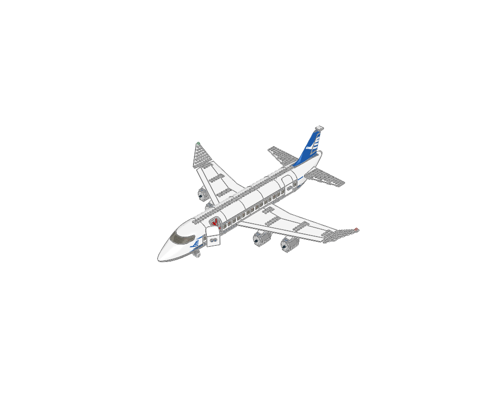
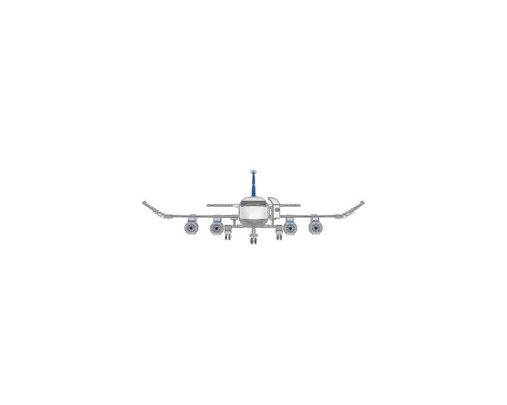
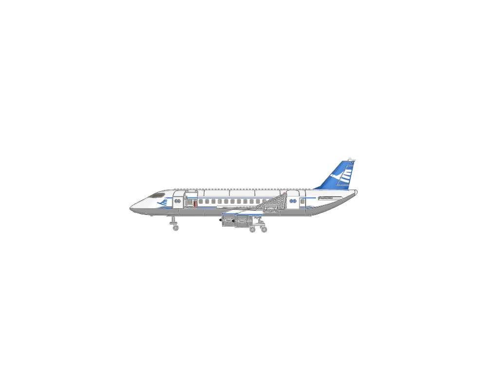
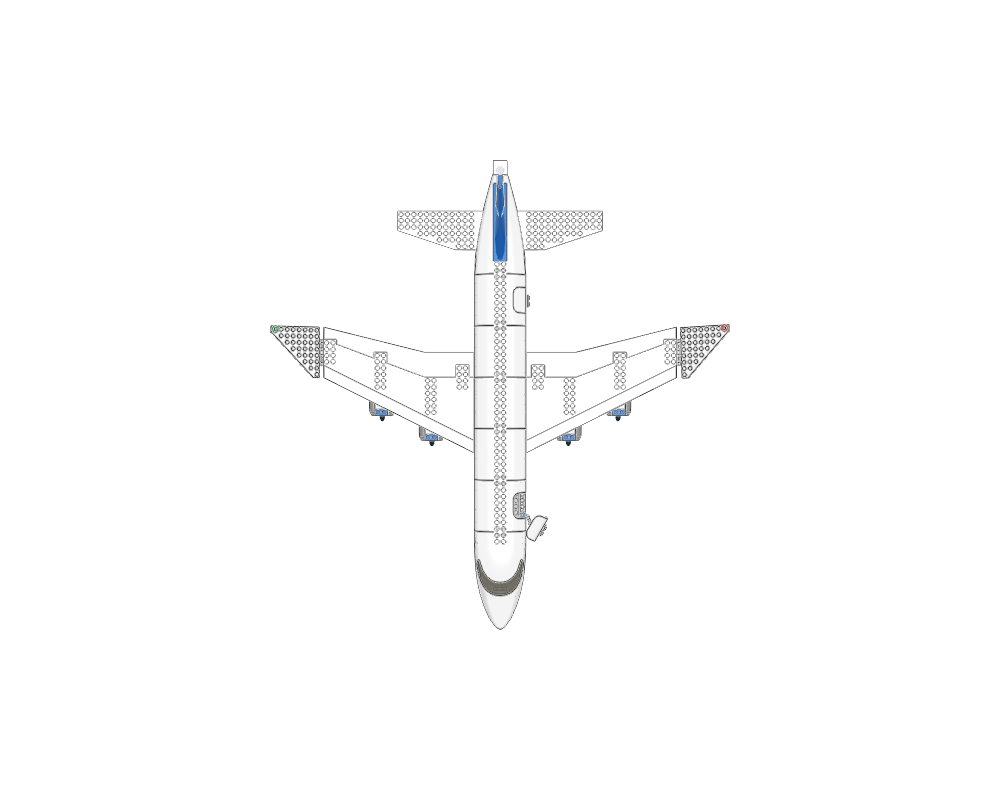
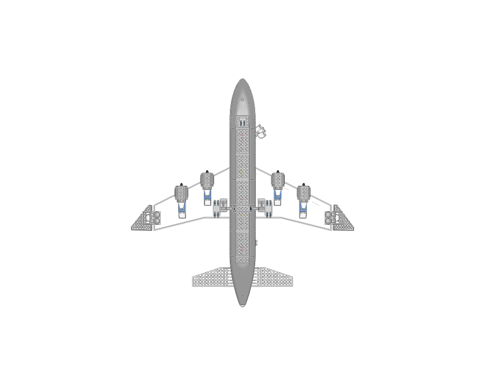
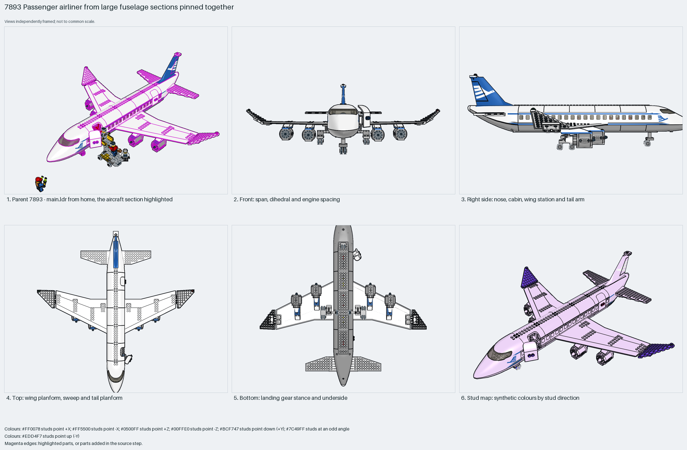

A minifigure airliner from large moulded sections: the 54092 glazed nose, 54091 cabin sections and the 54701 tail cone pinned end to end with 2780 friction pins, one 54093 wing part each side carrying two nacelles, a two-axle bogie under each wing root and the flight deck dropped into the nose. Measured: span 70 studs, length 64, height 23, 358 parts, 12% Technic.
construction
358 parts in 33 steps across 8 sections. The fuselage is a chain of moulded sections (54092p02c01 nose, 54090 and 54091 cabin sections with 4862/4863 window bricks, 54096, 54701p01c01 tail) joined by 2780 pins through their end holes; the wings are the 54093 wing part each side with 54095 fillets and 30355/30356 winglet wedges; the 54094 fin carries the tailplane plates; the `engine` (×4), `wheels` (×2) and `cabin` children plug in; 44568/44570 locking hinges carry the doors.
interfaces
272 studs up, 72 sideways, 14 angled. The section joints are pin holes, not studs; the wing's underside anti-studs take the engine pylons; a pin hole under each wing root takes a bogie; the floor studs inside take the seats, service and bar sections from the parent.
parent context
`7893 - main.ldr` places it at (−12, −144, −16) with the identity matrix, nose to −Z, with the boarding stairs at the open forward door and minifigures around it.
reuse notes
Use it when large moulded airliner parts are acceptable: set the cabin length by the number of 54091 sections, keep span about 1.1× length, hang engines from the wing anti-studs and bogies from wing-root pin holes. For a brick-built airliner take the module layout, not the parts.

home

front

right

top

bottom

mosaic
Sections to study separately
Use manual prepare on a selected source section to create its build pages.